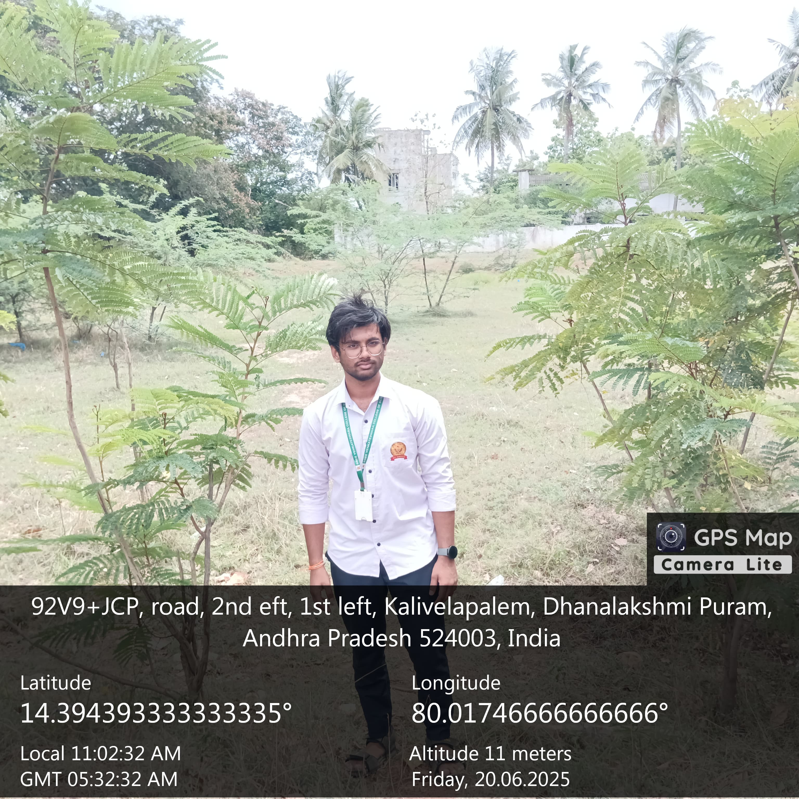
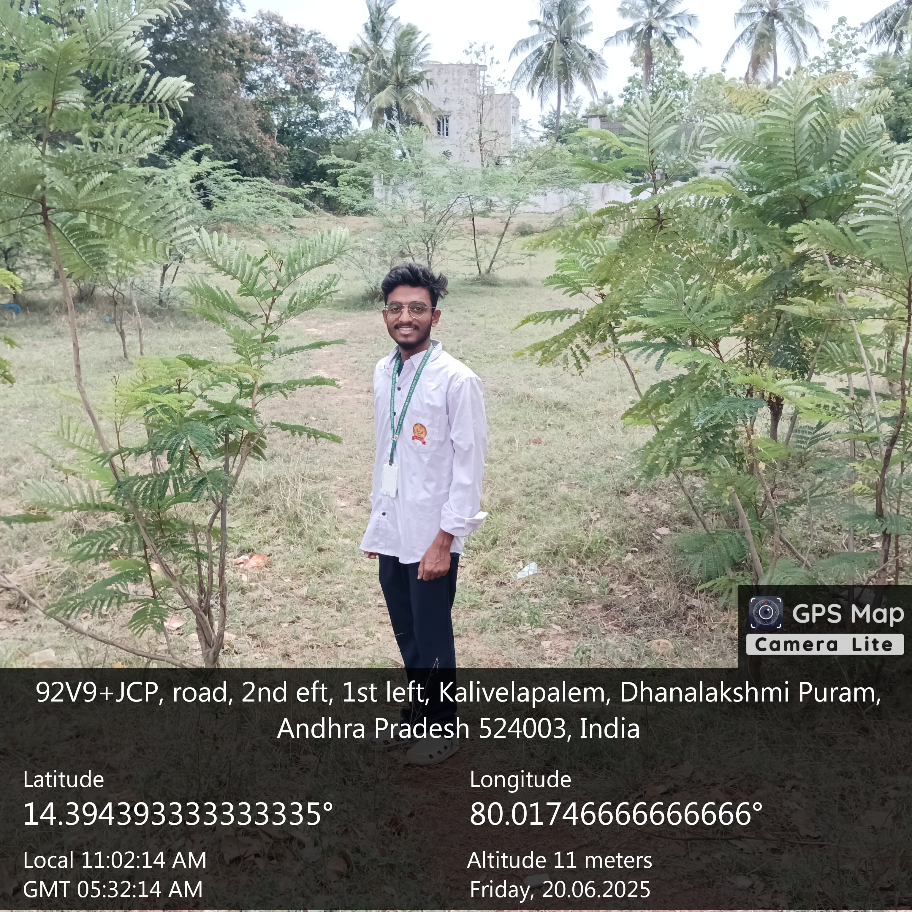

Community Health Survey
We noticed many people suffer from health problems due to addiction to street foods. We explained the risks and supplied medicines and face masks to the elderly population in the area.

